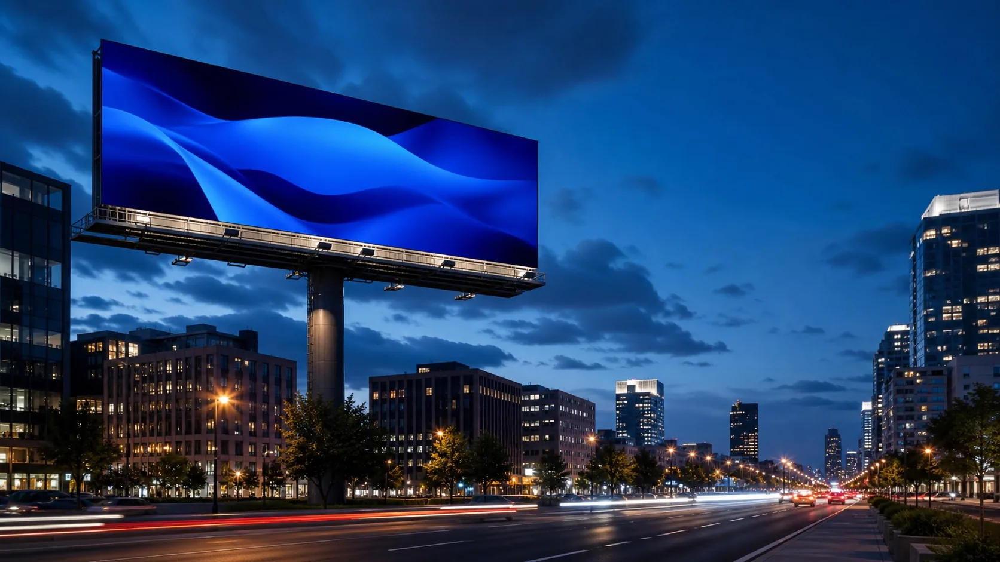
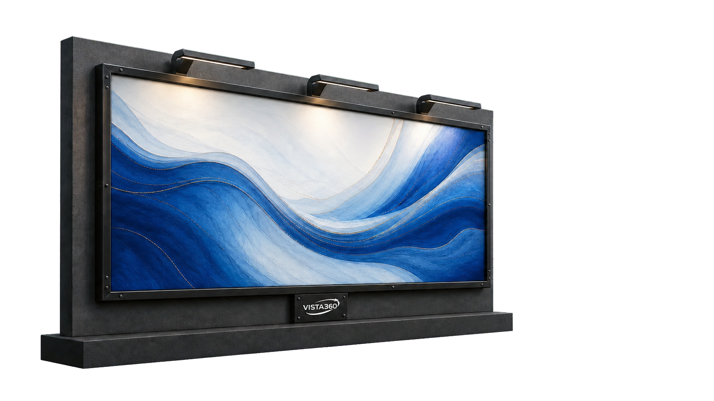
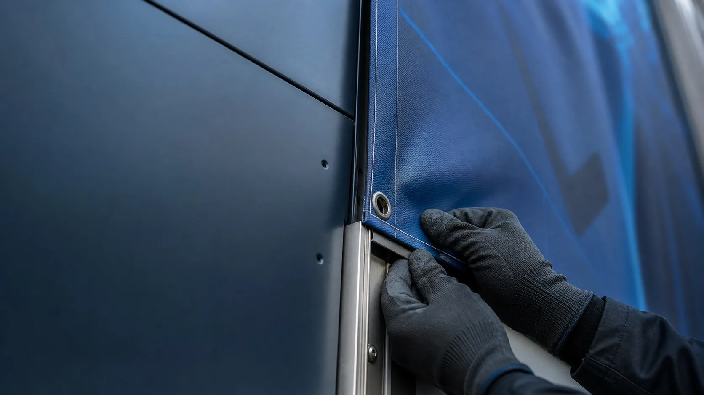
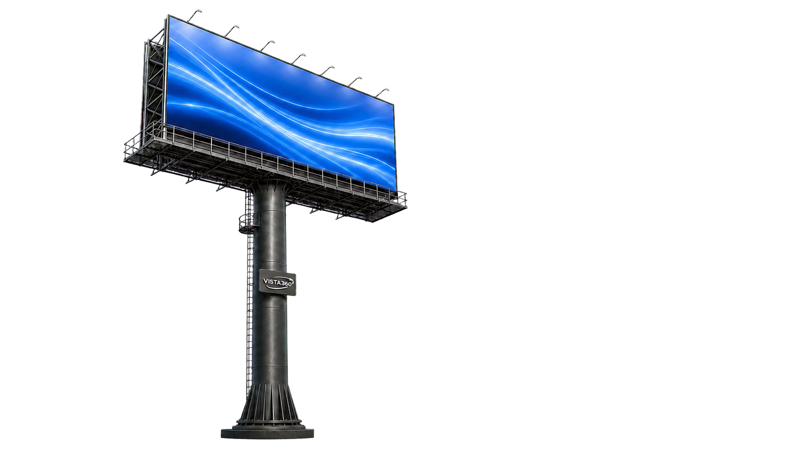
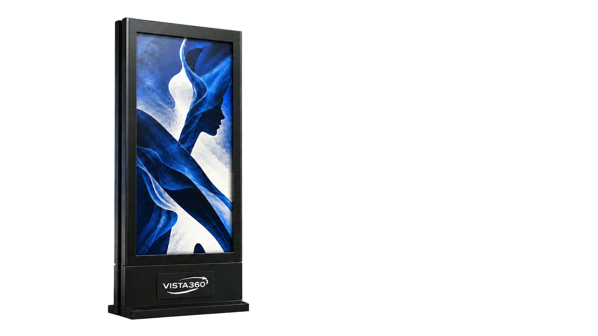
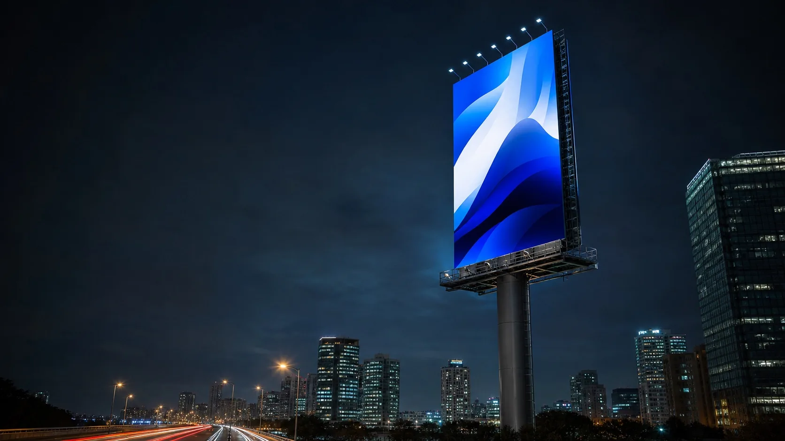

Arquitectura
El mural convierte una fachada en comunicación.

Murales, unipolares y tótems impresos para que tu marca ocupe un lugar real en el recorrido de la ciudad.
Consultar espacios Classic →Formatos físicos concebidos para ocupar la ciudad con escala, iluminación y una presencia constante durante toda la campaña.
Classic combina ubicación, escala, impresión e iluminación para construir una presencia constante. Cada soporte está pensado para una distancia y una forma distinta de recorrer la ciudad.
El mural convierte una fachada en comunicación.
El unipolar anticipa el mensaje desde la vía.
El tótem acompaña recorridos peatonales y accesos.

Una superficie de gran escala integrada a la fachada. El formato mural crea presencia sin separarse del entorno que lo sostiene.

Adaptamos la pieza a la superficie y cuidamos la preparación visual para conservar contraste, jerarquía y lectura después de ampliar el diseño.

Su altura libera el mensaje del ruido inmediato de la vía y crea una lectura clara mientras el público se aproxima.
El unipolar aprovecha altura, escala y ubicación para presentar una idea con claridad mientras el público todavía está en movimiento.
La elevación separa la campaña del ruido visual inmediato y ayuda a reconocerla desde mayor distancia.
La proporción del soporte mantiene una composición clara para recorridos vehiculares y avenidas principales.
La iluminación dedicada conserva contraste y visibilidad cuando cambia la luz de la ciudad.

Una superficie vertical para accesos, plazas y zonas peatonales donde el mensaje se descubre desde una distancia cercana.
El mensaje permanece visible, ocupa una superficie real y acompaña el recorrido durante toda la campaña.
El soporte comunica durante todo el periodo contratado.
Cada formato aprovecha el tamaño y la distancia de su entorno.
La campaña conserva lectura cuando cambia la luz de la ciudad.
Relacionamos objetivo, recorrido y formato disponible.
Preparamos la pieza para la escala y soporte elegidos.
Coordinamos la ejecución y organizamos el seguimiento.
